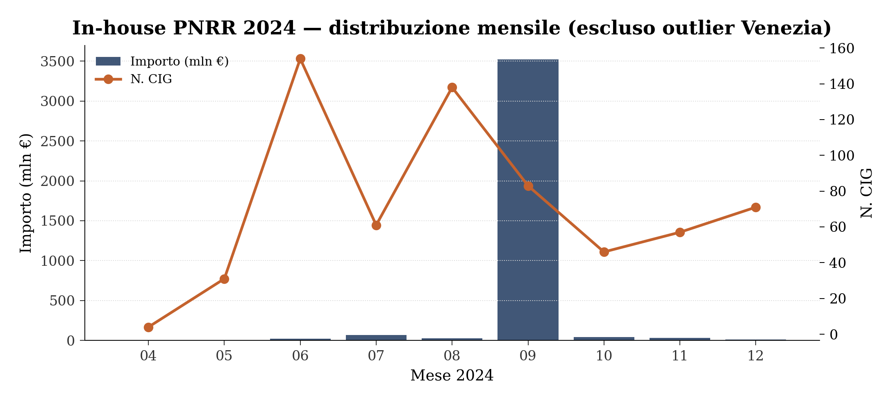
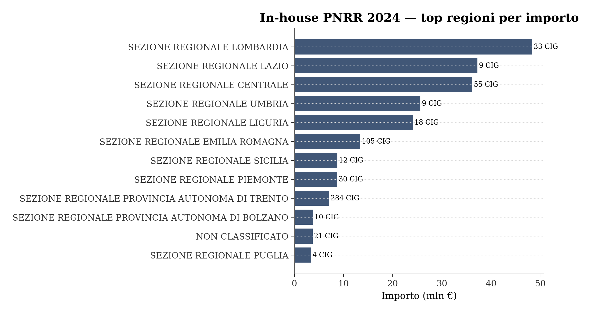
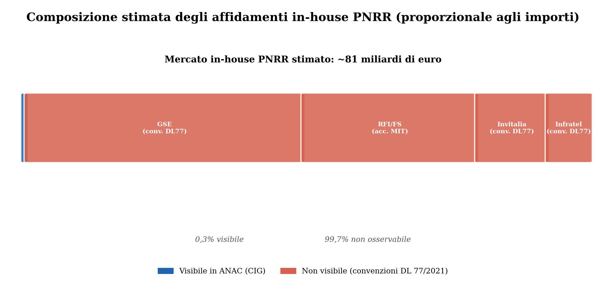

Affidamenti in-house PNRR 2024
La parte visibile e quella invisibile — analisi open data ANAC e quadro DL 77/2021
Paolo Volterra ![]()
Gli affidamenti in-house nel PNRR italiano si articolano su due livelli strutturalmente separati. Il livello osservabile — 644 CIG registrati in ANAC nel 2024, per 228 milioni di euro — riguarda enti locali, regioni e ASL che affidano direttamente a proprie società digitali e idriche. Il livello non osservabile — stimato in 75 miliardi di euro tramite convenzioni istituzionali ex DL 77/2021 art. 10 — comprende Invitalia, GSE, RFI, Sogei, Infratel e RAM, che operano su mandato ministeriale diretto senza CIG, senza pubblicazione BDNCP e senza vaglio ANAC. Le relazioni annuali ANAC 2023–2025 confermano questa asimmetria e documentano la critica al progressivo svuotamento dei controlli: soppressione dell’elenco in-house, mancata analisi di convenienza, DL 77/2021 usato come copertura per frazionamento artificioso.
PNRR, in-house, ANAC, DL 77/2021, appalti pubblici, trasparenza
1 Quadro normativo
1.1 DL 77/2021 e la deroga strutturale
Il decreto-legge 31 maggio 2021, n. 77 (Governance del Piano nazionale di ripresa e resilienza) (Decreto-legge 31 maggio 2021, n. 77 — Governance del Piano nazionale di ripresa e resilienza e prime misure di rafforzamento delle strutture amministrative e di accelerazione e snellimento delle procedure 2021) introduce all’art. 10 un canale parallelo per l’attuazione del PNRR: i ministeri titolari di missione possono affidarsi a soggetti attuatori tramite convenzione diretta, senza ricorrere alle ordinarie procedure di gara. I soggetti designati sono società a controllo pubblico già operative — Invitalia, GSE, RFI/FS, Sogei, Infratel, RAM — che ricevono risorse e mandati per importi molto superiori alle soglie ordinarie.
La deroga chiave è che queste convenzioni non generano CIG, non sono pubblicate su BDNCP e non sono soggette al vaglio ANAC. Costituiscono un affidamento diretto istituzionale tra amministrazione pubblica e propria società in-house, legittimato dalla norma speciale senza necessità di analisi di convenienza (art. 192 comma 2 d.lgs. 50/2016).
Il successivo DL 13/2023 (Decreto-legge 24 febbraio 2023, n. 13 — Disposizioni urgenti per l’attuazione del Piano nazionale di ripresa e resilienza (PNRR) e del Piano nazionale degli investimenti complementari al PNRR (PNC) 2023) ha consolidato il regime. La soppressione dell’elenco delle stazioni appaltanti in-house (Correttivo appalti (Decreto legislativo 31 dicembre 2024, n. 209 — Disposizioni integrative e correttive al codice dei contratti pubblici, di cui al decreto legislativo 31 marzo 2023, n. 36 2024)) ne ha ulteriormente eroso i presidi di controllo. ANAC (Autorità Nazionale Anticorruzione 2025, 6) commenta:
«La soppressione dell’elenco delle amministrazioni aggiudicatrici e degli enti aggiudicatori che operano affidamenti diretti nei confronti di proprie società in house […] fa venire meno il vaglio di ANAC sull’effettiva esistenza dei requisiti.»
| Soggetto attuatore | Ministero | Missioni principali | Importo stimato |
|---|---|---|---|
| Invitalia | MIMIT | M1C2 (imprese), M5C2 (ZES) | ~10 mld € |
| GSE | MASE | M2 (transizione ecologica) | ~40 mld € |
| RFI/FS | MIT | M3C1-C2 (ferrovie, porti) | ~25 mld € |
| Sogei | MEF | M1C1 (digitalizzazione PA), ReGiS | n.d. |
| Infratel | MISE | M1C2.1 (banda ultralarga) | ~6 mld € |
| RAM | MIT | M3 (mobilità sostenibile) | n.d. |
Il DL 13/2023 ha esteso e consolidato il regime. La soppressione dell’elenco delle stazioni appaltanti in-house (Correttivo d.lgs. 209/2024) ha eliminato l’unico strumento di pre-verifica ANAC sui requisiti dell’in-house, riducendo ulteriormente la trasparenza.
2 I dati osservabili: CIG in-house PNRR 2024
2.1 Perimetro dell’analisi
I dati ANAC Open Data consentono di identificare gli affidamenti in-house PNRR tramite due filtri combinati sugli archivi CIG mensili 2024:
cod_tipo_scelta_contraente = '25'→ Affidamento diretto a società in-houseFLAG_PNRR_PNC = '1'→ contratto associato a progetto PNRR o PNC
L’archivio completo 2024 (12 ZIP mensili, ~218 MB) restituisce 645 CIG per un importo nominale di 3,73 miliardi di euro. L’importo è dominato da un unico outlier strutturale.
2.2 L’outlier di settembre: VERITAS Venezia
Il CIG B2B9D43F30 (settembre 2024) è un’allineamento della scadenza dell’affidamento in-house del servizio rifiuti urbani veneziano a VERITAS SpA per il periodo 2024–2038, per 3,50 miliardi di euro complessivi. L’etichettatura FLAG_PNRR_PNC=1 deriva dalla classificazione M2 (transizione ecologica), ma non si tratta di un investimento PNRR in senso stretto, bensì di una rinegoziazione contrattuale pluriennale. È escluso dall’analisi principale.
2.3 Analisi aggregata (644 CIG, escluso outlier)
CIG in-house PNRR 2024 (escluso outlier): 644
Importo aggregato: 228.2 mln €
Importo medio per CIG: 354 k€Con 644 CIG per 228.2 milioni di euro, l’importo medio è circa 354 mila euro per affidamento. Il mercato in-house PNRR locale è dominato da micro-affidamenti digitali.
2.4 Distribuzione mensile

Il flusso di affidamenti in-house PNRR è quasi assente nel primo trimestre (gennaio–marzo: 0 CIG) e si concentra nella seconda metà dell’anno. Il picco di giugno (154 CIG, 22,3 mln€) corrisponde alla scadenza delle milestone PNRR di metà anno. Luglio registra il picco di importo unitario (68 mln€ in 61 CIG) per l’incidenza di affidamenti infrastrutturali idrici.
2.5 Distribuzione geografica

| Regione | CIG | Importo (mln €) |
|---|---|---|
| SEZIONE REGIONALE LOMBARDIA | 33 | 48.4 |
| SEZIONE REGIONALE LAZIO | 9 | 37.2 |
| SEZIONE REGIONALE CENTRALE | 55 | 36.2 |
| SEZIONE REGIONALE UMBRIA | 9 | 25.6 |
| SEZIONE REGIONALE LIGURIA | 18 | 24.1 |
| SEZIONE REGIONALE EMILIA ROMAGNA | 105 | 13.4 |
| SEZIONE REGIONALE SICILIA | 12 | 8.7 |
| SEZIONE REGIONALE PIEMONTE | 30 | 8.7 |
| SEZIONE REGIONALE PROVINCIA AUTONOMA DI TRENTO | 284 | 7.1 |
| SEZIONE REGIONALE PROVINCIA AUTONOMA DI BOLZANO | 10 | 3.8 |
| NON CLASSIFICATO | 21 | 3.7 |
| SEZIONE REGIONALE PUGLIA | 4 | 3.4 |
La Provincia Autonoma di Trento domina per numero di CIG (284, pari al 44% del totale) ma con importi medi minimi (~25 k€/CIG): si tratta dei micro-affidamenti digitali gestiti dal Consorzio Comuni Trentini tramite la propria società in-house Trentino Digitale. La Lombardia primeggia per importo grazie a pochi contratti di valore unitario elevato.
Anomalia Parabiago: il Comune di Parabiago (27.000 abitanti, Provincia di Milano) registra un singolo affidamento in-house PNRR da 46,6 milioni di euro — importo anomalo per un comune di quella dimensione.
2.6 Top committenti (stazioni appaltanti)
| Stazione appaltante | CIG | Importo (mln €) |
|---|---|---|
| COMUNE DI PARABIAGO | 1 | 46.58 |
| REGIONE LAZIO | 6 | 35.96 |
| AGENZIA DEL DEMANIO | 1 | 29.50 |
| S.I.I. SOCIETA CONSORTILE PER AZIONI | 1 | 22.64 |
| AZIENDA LIGURE SANITARIA DELLA REGIONE LIGURIA | 2 | 9.99 |
| COMUNE DI PALERMO | 10 | 7.59 |
| REGIONE EMILIA ROMAGNA | 6 | 5.47 |
| REGIONE LIGURIA | 4 | 5.22 |
| REGIONE PIEMONTE | 9 | 5.09 |
| UNIONE DELLA ROMAGNA FAENTINA | 1 | 3.88 |
2.7 Top beneficiari (aggiudicatari)
| Beneficiario | Tipo | CIG | Importo (mln €) |
|---|---|---|---|
| LazioCrea Spa | STAZIONE APPALTANTE | 6 | 35.96 |
| SOGEI SPA | STAZIONE APPALTANTE | 1 | 29.50 |
| LIGURIA DIGITALE | STAZIONE APPALTANTE | 12 | 24.26 |
| UMBRIADUE SERVIZI IDRICI S.C. A R.L. | IMPRESA | 1 | 22.64 |
| LEPIDA S.C.P.A. | STAZIONE APPALTANTE | 92 | 8.66 |
| SISPI SISTEMA PALERMO INNOVAZIONE S.P.A. | STAZIONE APPALTANTE | 10 | 7.59 |
| CONSORZIO PER IL SISTEMA INFORMATIVO*(CSI PIEMONTE | STAZIONE APPALTANTE | 18 | 4.39 |
| AZIENDA DI SERVIZI ALLA PERSONA DELLA ROMAGNA FAEN | STAZIONE APPALTANTE | 1 | 3.88 |
| INFORMATICA ALTO ADIGE SPA | STAZIONE APPALTANTE | 4 | 3.76 |
| GIUDICARIE ENERGIA ACQUA SERVIZI S.P.A. | STAZIONE APPALTANTE | 28 | 3.28 |
| INNOVAPUGLIA S.P.A. | STAZIONE APPALTANTE | 2 | 3.18 |
| TRENTINO DIGITALE S.P.A. | STAZIONE APPALTANTE | 122 | 3.00 |
| FONDAZIONE UGO BORDONI | STAZIONE APPALTANTE | 1 | 3.00 |
| AGENZIA NAZIONALE PER L'ATTRAZIONE DEGLI INVESTIME | STAZIONE APPALTANTE | 1 | 2.72 |
| PUNTOZERO S.C.A R.L. | STAZIONE APPALTANTE | 4 | 2.56 |
Nota classificatoria: in ANAC i beneficiari in-house compaiono come tipo_soggetto = STAZIONE APPALTANTE, non come IMPRESA. Le società a controllo pubblico che ricevono il contratto sono classificate come enti pubblici perché godono dello stesso status del committente. Questo rende invisibile il trasferimento finanziario nelle analisi standard per tipologia di soggetto.
2.8 Oggetti prevalenti e missioni PNRR
| Oggetto gara | Importo (mln €) |
|---|---|
| AFFIDAMENTO IN HOUSE DEL SERVIZIO DI IGIENE URBANA E AMBIENTALE | 46.58 |
| ASSISTENZA SPECIALISTICA E DI SUPPORTO TECNICO-OPERATIVO PER LA REALIZZAZIONE DE | 33.91 |
| CONTRATTO ESECUTIVO CON LA SOGEI S.P.A. PER IL TRIENNIO 1° GENNAIO 2024 – 31 DIC | 29.50 |
| PNRR M2C4-I4.2_140 RIDUZIONE DELLE PERDITE NELLE RETI DI DISTRIBUZIONE DELL'ACQU | 22.64 |
| REALIZZAZIONE DELL'INTERVENTO INCREMENTO DELLE COMPETENZE DIGITALI DEI PROFESSIO | 7.47 |
| PNRR - MISSIONE 1, COMPONENTE 1 - INVESTIMENTO 1.2 ABILITAZIONE AL CLOUD PER LE | 4.12 |
| CONTRATTO DI SERVIZIO TRA L'UNIONE DELLA ROMAGNA FAENTINA E L'ASP ROMAGNA FAENTI | 3.88 |
| PIANO NAZIONALE DI RIPRESA E RESILIENZA (PNRR) – M1C1 1.1.1 INVESTIMENTO 1.1 INF | 3.82 |
| SERVIZI DI SUPPORTO TECNICO-SCIENTIFICO A FAVORE DI ACN | 3.00 |
| ATTIVITÀ DI SUPPORTO TECNICO - OPERATIVO RELATIVA A PROCESSI PER LA DIGITALIZZAZ | 2.72 |
| PROGETTO DI REALIZZAZIONE DELL'ECOSISTEMA INFORMATIVO UNICO SOCIOSANITARIO LIGUR | 2.52 |
| PNRR M5C1 INVESTIMENTO 1.1 -POTENZIAMENTO DEI CENTRI PERL'IMPIEGO – SERVIZIO PER | 2.49 |
I temi dominanti nel segmento in-house PNRR osservabile sono:
| Tema | Missione PNRR | Esempi |
|---|---|---|
| Cloud PA e migrazione sistemi | M1C1.1.2 | LazioCrea, Liguria Digitale |
| Piattaforme digitali (SPID, CIE, PDND, FSE) | M1C1.1.4 / M6C2.1.3 | LEPIDA, SISPI Palermo |
| Cybersecurity CSIRT regionali | M1C1.1.5 | Fondazione Ugo Bordoni / ACN |
| Reti idriche, riduzione perdite | M2C4.4.2 | Umbriadue, Giudicarie |
3 La parte invisibile: convenzioni istituzionali ex DL 77/2021
La cifra osservabile (228 mln€ in 644 CIG) rappresenta meno dello 0,3% degli importi gestiti tramite convenzioni DL 77/2021 dai grandi soggetti attuatori.
| Segmento | Importo (mld €) | Visibile in ANAC | Strumento |
|---|---|---|---|
| Osservabile ANAC (CIG 2024) | 0.23 | Sì | CIG BDNCP |
| GSE — misure energetiche M2 (stima) | 40.00 | No | Convenzione MEF-GSE ex DL 77/2021 |
| RFI/FS — infrastrutture M3 (stima) | 25.00 | No | Accordo di programma MIT-FS |
| Invitalia — sviluppo imprese M1-M5 (stima) | 10.00 | No | Convenzione MIMIT-Invitalia ex DL 77/2021 |
| Infratel — BUL M1C2.1 (stima) | 6.00 | No | Convenzione MISE-Infratel ex DL 77/2021 |
Le stime dei grandi soggetti derivano da: convenzioni pubblicate in Gazzetta Ufficiale, Piano Operativo PNRR MIMIT, report semestrale avanzamento PNRR (Presidenza del Consiglio), delibere Corte dei Conti.
Le convenzioni istituzionali non generano CIG perché l’art. 10 DL 77/2021 ne esclude esplicitamente l’obbligo. Non esistono quindi né CIG, né pubblicazione su TED/GU, né fascicolo virtuale dell’operatore economico (FVOE), né dati aperti strutturati sul contenuto, il prezzo o l’avanzamento fisico dei singoli contratti.
4 ANAC e il regime derogatorio (relazioni 2023–2025)
Le tre relazioni annuali ANAC (attività 2023, 2024, 2025) convergono su una posizione critica articolata.
4.1 La posizione istituzionale
Relazione 2025 §1.2.2 (Autorità Nazionale Anticorruzione 2025, 7): ANAC nomina esplicitamente DL 77/2021 e DL 13/2023 come il regime derogatorio già esistente e chiede che non vengano aggiunte ulteriori deroghe:
«[È necessario] evitare, per gli appalti PNRR, ulteriori deroghe alla disciplina ordinaria rispetto a quelle già previste dalla disciplina speciale di cui ai decreti-legge n. 77/2021 e n. 13/2023.»
Relazione 2025 §1.2.9 (Autorità Nazionale Anticorruzione 2025, 16): le gestioni commissariali con discipline derogative differenziate:
«[La proliferazione di] sotto-discipline derogative diverse […] compromette la certezza del diritto e nuoce alla trasparenza.»
Relazione 2024 (Busia, audizione Camera) (Autorità Nazionale Anticorruzione 2024, 14): la critica alle deroghe emergenziali:
«Il ripetuto ricorso a deroghe e discipline parallele, spesso legate alla nomina di Commissari, [è un elemento critico del sistema degli appalti pubblici italiani].»
4.2 Casi documentati di uso improprio del regime derogatorio
Comune di San Salvo, PNRR M2C1 (Autorità Nazionale Anticorruzione 2025, sez. 12.3.7): la stazione appaltante ha frammentato artificiosamente un intervento unitario in 5 procedure negoziate di importo sub-soglia, citando il DL 77/2021 a giustificazione della semplificazione procedurale. ANAC ha contestato con nota di definizione semplificata; la SA ha annullato le aggiudicazioni e rilanciato con gara conforme.
Progetto PNC, frazionamento in 3 procedure (Autorità Nazionale Anticorruzione 2026, sez. 14.3.4): affidamento di lavori in un unico complesso immobiliare suddiviso in tre procedure negoziate sub-comunitarie. ANAC ha richiamato il nesso funzionale (art. 35 comma 9 d.lgs. 50/2016); la SA ha annullato in autotutela e avviato gara aperta.
4.3 Vigilanza sull’in-house nei servizi pubblici locali (2025)
La relazione 2026 (Autorità Nazionale Anticorruzione 2026, cap. 14) documenta una campagna sistematica di vigilanza sugli in-house SPL:
| Caso | Patologia | Esito |
|---|---|---|
| TPL Genova | Mancata analisi art. 192 c.2; contributi pubblici integrativi multipli | Censurato nota 29/9/2025 |
| Acquedotto Pugliese | Controllo analogo insufficiente (CdA dominante) | Statuto modificato |
| ASIA Trentino | Azienda speciale per servizi a rete ≠ d.lgs. 201/2022 (Decreto legislativo 23 dicembre 2022, n. 201 — Riordino della disciplina dei servizi pubblici locali di rilevanza economica 2022) | Trasformazione in SpA in-house dal 2026 |
| AMAG Alessandria rifiuti | Affidamento diretto + proroga illegittima | Trasmesso Corte dei Conti |
| Rifiuti Pordenone | Proroga illegittima + sine titulo lug–dic 2024 | Contestato |
Sul caso TPL Genova, ANAC (Autorità Nazionale Anticorruzione 2026, sez. 14.5.1.2, p. 297) censurava:
«[Il] ricorso alla gestione in house da parte del Comune è stato mantenuto senza valutare il rispetto dei parametri di opportunità e convenienza del modello adoperato, disattendendo l’analisi sugli effettivi benefici che la gestione in house avrebbe comportato per la collettività in termini di qualità, accessibilità e economicità, così come richiesto dall’articolo 192 del Codice dei contratti.»
Il caso ASIA Trentino (Autorità Nazionale Anticorruzione 2026, sez. 14.5.3.3, p. 299) è direttamente connesso ai 284 CIG Trentino Digitale che emergono dai nostri dati. ANAC descrive:
«I 24 Comuni consorziati hanno sostanzialmente riaffidato in via diretta i servizi in esame al Consorzio ASIA, sino al 31 dicembre 2038, in forza della clausola di salvaguardia inserita nell’articolo 1, comma 5, del decreto legislativo n. 201/2022.»
La contestazione riguarda i servizi di igiene ambientale (non Trentino Digitale), ma evidenzia come lo stesso pattern di gestione interna pluridecennale — riaffidamento diretto senza gara fino al 2038 — si ripeta nella medesima area geografica. ANAC ha applicato il d.lgs. 201/2022 (Decreto legislativo 23 dicembre 2022, n. 201 — Riordino della disciplina dei servizi pubblici locali di rilevanza economica 2022) anche alle Province Autonome (delibera 378/2025), confermando che la deroga delle autonomie speciali non copre i servizi a rete.
4.4 Vigilanza PNRR: il metodo di selezione (2025)
In tema di criteri di sorveglianza, ANAC (Autorità Nazionale Anticorruzione 2026, sez. 14.2, p. 287) descrive la metodologia adottata nel 2025 per gli affidamenti PNRR:
«Con riguardo agli interventi finanziati dal PNRR, l’Autorità ha previsto iniziative di vigilanza orientate a criteri di priorità e impatto, selezionando gli interventi anche mediante consultazione dei sistemi informativi dedicati e valutando non solo il valore economico, ma anche il rischio di frodi/irregolarità e l’impatto sociale e pubblico degli interventi, così da indirizzare i controlli verso le filiere più sensibili.»
Questa selezione avviene per interoperabilità tra BDNCP e i sistemi RGS di monitoraggio PNRR (Autorità Nazionale Anticorruzione 2026, sez. 1.3.5) — ma riguarda solo i CIG registrati, non le convenzioni DL 77/2021.
4.5 Cosa ANAC chiede al Parlamento
Dalle tre relazioni emergono quattro richieste strutturali coerenti:
- Protocollo COLAF (Commissione interministeriale antifrode) per interoperabilità dati PNRR
- Protocollo di alta sorveglianza ANAC su appalti PNRR, anche per i soggetti DL 77/2021
- Accesso ANAC ai dati BDNCP dei soggetti fuori obbligo CIG
- Nessuna deroga ulteriore oltre il regime già esistente
5 La dicotomia strutturale

La dicotomia non è una disfunzione tecnica ma una scelta normativa. Il DL 77/2021 ha creato consapevolmente due regimi distinti:
- Regime ordinario (CIG BDNCP): enti locali, regioni, ASL → affidamento diretto a proprie società in-house → tracciato, pubblicato, vigilato da ANAC → soggetto all’obbligo di analisi di convenienza (art. 192 comma 2)
- Regime speciale (convenzioni DL 77/2021): ministeri → soggetti attuatori nazionali → accordo diretto → non tracciato in BDNCP, non pubblicato su TED, non vigilato da ANAC, non soggetto ad analisi di convenienza
La razionale dichiarata è la velocità di attuazione. La conseguenza strutturale è l’impossibilità di verifica esterna su prezzi, qualità della spesa e avanzamento fisico per la parte quantitativamente dominante del PNRR.
6 Conclusioni e domande aperte
6.1 Cosa sappiamo
- 228 milioni di euro in 644 CIG in-house PNRR sono registrati in ANAC per il 2024, con una struttura dominata da micro-affidamenti digitali (media 354 k€/CIG) a società regionali ICT
- I grandi soggetti attuatori (Invitalia, GSE, RFI, Sogei, Infratel) non compaiono in nessun dataset ANAC — neanche come aggiudicatari
- Le Relazioni annuali ANAC 2023–2025 confermano la critica al regime derogatorio, documentano casi di uso improprio del DL 77/2021 per frazionamento artificioso, e chiedono accesso ai dati delle convenzioni
- La vigilanza sull’in-house SPL (rifiuti, acqua, trasporto) è attiva e produce contestazioni concrete; la vigilanza sull’in-house PNRR dei soggetti nazionali non può avvenire per mancanza di strumenti normativi e informativi
6.2 Domande aperte
- Prezzi congruenti? Le convenzioni DL 77/2021 non prevedono analisi di mercato. Il rischio di sovraprezzo non è verificabile con dati pubblici
- Avanzamento fisico? ReGiS (sistema di rendicontazione PNRR) non è pubblico. Il Report semestrale MIMIT fornisce dati aggregati senza dettaglio contrattuale
- Chi controlla i soggetti attuatori? La Corte dei Conti ha competenza, ma con risorse limitate e scudo erariale ridotto per PNRR (art. 21 DL 76/2020). Il MEF/RGS monitora l’avanzamento finanziario. ANAC non ha accesso strutturato
- Il DL 77/2021 è conforme alle regole UE sugli appalti? La Commissione Europea monitora ma non ha ancora espresso posizioni formali sull’esenzione BDNCP
7 Note metodologiche
- I CIG mensili ANAC 2024 sono stati letti direttamente dai 12 ZIP (
IN/cig2024/) via DuckDB, senza estrazione su disco - La colonna
importo_complessivo_garausa virgola decimale: convertita conREPLACE(...,',','.')prima del cast - Il CIG B2B9D43F30 (VERITAS Venezia, 3,50 mld€) è escluso dall’analisi principale: è una rinegoziazione pluriennale di contratto di servizio pubblico esistente, non un investimento PNRR
- Gli importi dei grandi soggetti attuatori (GSE, RFI, Invitalia, Infratel) sono stime da fonti pubbliche secondarie, non da dati primari verificabili
- La classificazione
tipo_soggetto = STAZIONE APPALTANTEper le società in-house beneficiarie è la prassi ANAC: non costituisce un errore ma riflette lo status giuridico dei soggetti controllati dalla PA - Le sezioni ANAC sono state estratte dalla lettura diretta (PDF tool) dei tre report: 9YXU45DX (2024), BP9P44UU (2025), KRW8FNQ6 (2026)
8 Riferimenti bibliografici
Trasparenza sull’uso dell’intelligenza artificiale
L’uso di strumenti di intelligenza artificiale generativa è dichiarato esplicitamente in quanto parte del processo di lavoro seguito nella redazione del presente documento. Tali strumenti sono stati impiegati a supporto della lettura, della sintesi, della riorganizzazione argomentativa e della revisione testuale, sempre nell’ambito di un processo pienamente controllato dall’autore.
La responsabilità per le fonti utilizzate, le analisi condotte, le verifiche effettuate, le interpretazioni proposte e le conclusioni formulate resta interamente in capo all’autore.
L’intelligenza artificiale è stata utilizzata come ambiente di supporto cognitivo ed editoriale, non come fonte primaria, autore autonomo o sostituto del giudizio critico.